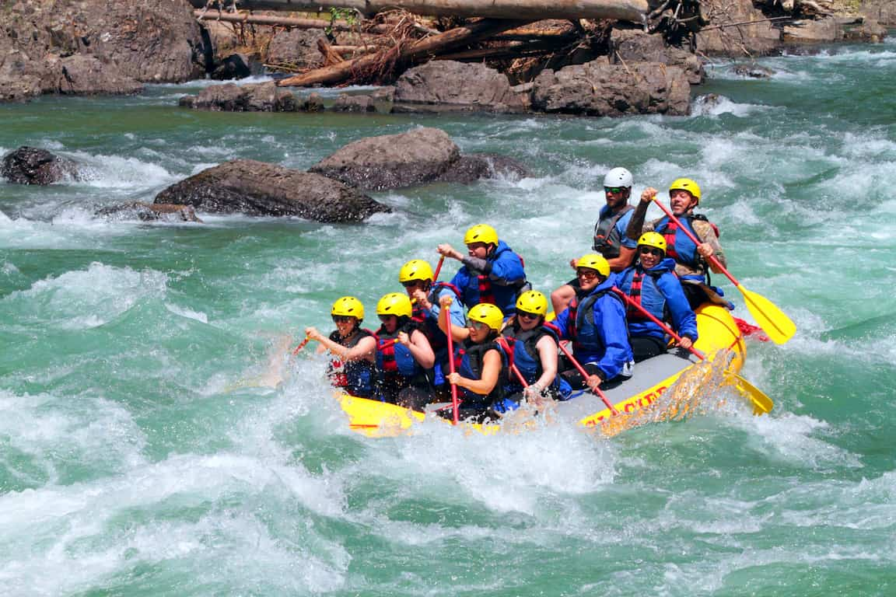
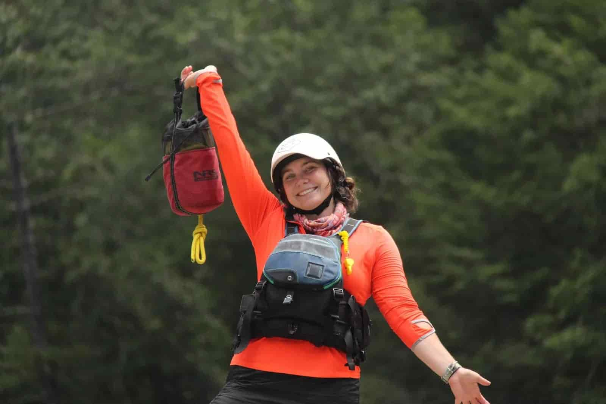

Splash Wild White Rafting

At Splash Wild White Rafting, our mission is to provide thrilling and safe
white-water rafting adventures that create unforgettable memories. We believe in
the power of nature, the spirit of adventure, and the importance of teamwork.
With expert guides, top-tier safety standards, and a deep respect for the
environment, we strive to deliver exhilarating experiences that inspire courage,
connection, and a love for the wild. Ride the Rapids. Conquer the Wild.
History
Splash Wild White Rafting was founded in the heart of Peru, inspired by the
country's breathtaking rivers and the adventurous spirit of its people. What started
as a small group of passionate rafters has grown into a leading adventure company,
offering thrilling experiences on some of Peru's most iconic white-water rapids. Our
commitment to safety, professionalism, and environmental respect has made us a
trusted name in adventure tourism.